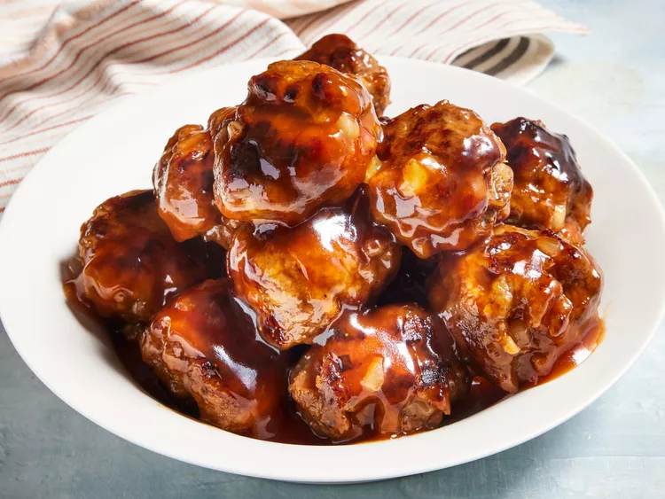

Easy Recipes
Recipe 2: Sweet and Sour Meatballs

Description
This sweet and sour meatball recipe came from my mother-in-law. I got it shortly after I was married and now it is a favorite of our kids. I like to serve it over rice.
Ingridients
Meatballs:
- 1 pound ground beef.
- 1 cup dry bread crumbs.
- 1 onion, chopped.
- 1 egg.
- salt and pepper to taste.
Sweet and Sour Sauce:
- 1 cup brown sugar.
- 1 cup water.
- ½ cup ketchup.
- ½ cup cider vinegar.
- 2 tablespoons soy sauce.
- 2 tablespoons cornstarch.
Steps: How to Make Sweet and Sour Meatballs
- Step 1: Make meatballs: Mix beef, bread crumbs, onion, egg, salt, and pepper together in a large bowl until well combined.
- Step 2: Shape mixture into 1 1/2-inch diameter balls.
- Step 3: Cook meatballs in a large nonstick skillet over medium heat until evenly browned and cooked through.
- Step 4: Make sauce: Mix brown sugar, water, ketchup, vinegar, soy sauce, and cornstarch together in a medium bowl until smooth.
- Step 5: Pour sauce over meatballs. Reduce heat to low and simmer until sauce is thick, 3 to 5 minutes.
- Step 6: Serve hot and enjoy!